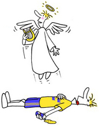

Red Bull
 De: La Frikipedia, la enciclopedia extremadamente seria.
De: La Frikipedia, la enciclopedia extremadamente seria.
| De la serie alimentos y otras vainas:
|
|
|
| Nombre:
|
Red bull/Toro rojo
|
| Tipo de Comida:
|
Liquido
|
| ¿Como se Come?
|
se come bebiendoselo
|
| ¿De donde Proviene?
|
Todo el mundo
|
| Ingrediente Basico:
|
Venenos varios y orina de toro
|
| Forma de Presentación
|
En lata
|
| Sabor:
|
Red bull
|
 Red Bull te dá alas...
El Red Bull es la bebida con el logo de un toro sin cojones que te da una fuerza descomunal, ahora en tu tienda favorita.
Definición científica
El Red Bull es un líquido de color negro fosforito. Sus propiedades son milagosas, pero solo un 0,07 % de la población mundial puede beberlo en estado natural, el resto nos tenemos que conformar en beberlo destilado, con Pepsi y de color amarillo,aunque posiblemente no aprovechemos su contenido esencial,ya que el 0,07 % de los Red Bull hace que vueles.
Se cree que una gran dosis de Red Bull en sangre te transporta al País de las maravillas, donde Vin Diesel gobierna con mano de hierro a sus ciudadanos cobrándoles comisiones de 150 € cada vez que van al cajero automático.Se han dado casos de gente que todavia no ha vuelto aunque eso lo plasman en la serie los 4400.
Es la famosa orina de Bruce Lee enlatada para adquirir sus marivillosos poderes
Consecuencias de consumo
Se ha podido observar en innumerables casos la aparición de mutaciones en los bebedores de Red Bull. La principal mutación es el nacimiento de alas, que se originan el en culo y crecen hasta llegar a la espalda, en otros casos, solo produce diarrea crónica.Tambien se han dado casos de consumismo excesivo en el que el pobre consumidor pasa de tener alas a tener almorranas.
Ingredientes
Sabías que...
- ...Red Bull es la orina de Chuck Norris?
- ...Red Bull te da alas?
- ...la Red Bull también es gasolina?
- ...es la bebida favorita de George Bush?
- ...es el elemento principal de la
viril fuerza del maestro Roshi?
- ...también se lo daban a Gokú como mamila?
- ...al tomarla lo primero que dirás es un WTF, seguido de un puta madre, esto está buenísimo, y te la tomarás toda, y luego procederas a levantar edificios por la fuerza descomunal que ahora tienes...
- ...luego morirás porque los efectos duran de 1 a 3 minutos antes de que te de alas?
- ...Frenando Alonso desde que no toma red bull no consigue quedar primero?
- ...nadie debe de tomarse 3 redbull en una misma noche?
- ...produce esterilidad?
- ...tienen equipo de Fórmula 1 y de Nascar? (Red Bull Racing)
- ...Bill Gates usa Red Bull como vigorizante sexual?
- ...Por eso las Windows tienen pantallazos azules?
- ...mezclándolo con coca-cola te fabricas una hojiva nuclear?
- ...que si bebes esa mezcla viajas al mundo sobrenatural de Disney?
- ...Su ingrediente secreto es semen de nacho vidal? (poreso te da tanta energia)
- ...te da espasmos anales? (el pobre de tus pantalones)
- ...si tomas una lata a las 12 de la noche se te caeran las bolas?
- ...produce una hormona que atrae a todo tipo de payasos violadores?
- ...si lo tomas con alcohol a los tres segundos te vuelves negro y cagas tu intestino delgado?
- ...es lo unico que bebe Angus Young?
- ...te hace más fertil?
- ...todos los universitarios lo toman una vez en su vida?
Véase tambien
Autor(es):
- Fordus
- Mastro
- Haakjvork
- Chrisnavi
- Frikiman
- Conan
- Cibercrank
- Naudo
- Mel-o
- LudLinkXD
Frikipedia 2005-2016, Licencia
GFDL 1.2 - Extraído por FrikiLeaks